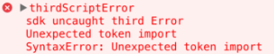

微信小程序+mpvue+vant的打开方式
微信小程序+mpvue+vant的打开方式
前言
前阵子使用mpvue构建微信小程序，在引入其他框架时出现了一点问题，需要去修改配置，这里给出具体的配置流程
创建工程
按照正常流程创建工程
vue init mpvue/mpvue-quickstart demo |
##修改webpack
在项目根目录下找到build/webpack.base.conf.js，在baseWebpackConfig.plugins中添加以下代码
new CopyWebpackPlugin([ |
引入组件
这里只需要在src/app.json中添加所需要的组件即可，不需要在vue文件中再次import
"usingComponents": { |
解析
实际上思路还是很明确的，微信的npm是自成一体，所以需要把工程中引入的第三方npm包复制到微信的npm中一份。在引入完毕后，在app.json中统一进行组件的引入。
另外可能出现这样的报错

这个时候打开微信的转译就好了，把es6编译成es5